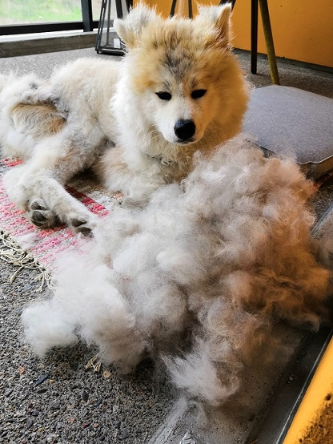
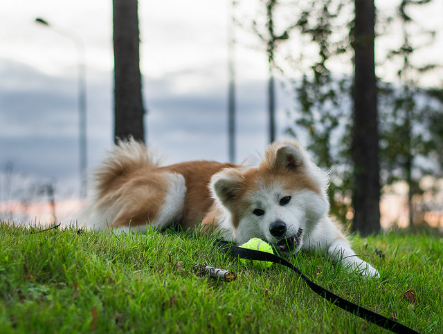

Elokuu
Ei enää niin karvainen koira

Neito aloitti karvojen tipputtamisen. Minun pieni pörrö
akita ei olekaan enää ihan niin pörrö. Ulkona hävettää lähestulkoon
tuon kanssa mennä kun raukalla meinaa paistaa kyljistä iho turkin läpi.
Varmasti sieltä tulee upea turkki tilalle, kun vaan malttaa odottaa.
Paljon ollaan käyty ajelulla etsimässä uusia lenkkireittejä. Siinä isä on
toiminut mainiona oppaana ja lenkkiseurana. Ihana miten sekä hän että Neito
ovat molemmat niistä hetkistä ja toistensa seurasta niin innoissaan.
Neito on päässyt tekemään mallin hommia, kun rakas ystäväni aloitti
kuvaamis harrastuksen. Lenkkejen aikana on kamera ollut mukana useampaan
kertaan. Olemme menneet ihan kuvaamaankin niin että on pallo mukana,
jotta saadaan pidettyä Neitoa liikkeellä.
Päädyin hiljattain itsekin
kameran eteen pienen cosplay-kuvaus session ajaksi Saber Alterin asussa.
Se oli mahdottoman hauskaa, varsinkin tutun kuvaajan kanssa.
Saimme upeita kuvia, joita en nyt tänne
aio laittaa.
